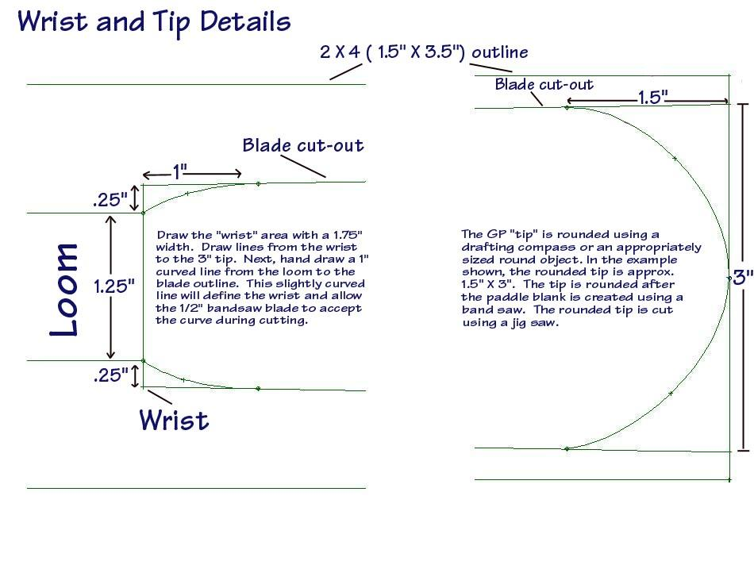

| Greenland Paddle Construction | Menu Last Page Next Page |
|
 The "wrist" area is curved as described above after the loom and blade lines are first drawn. The hand drawn curve allows the fairly wide ( 1/2") bandsaw blade to make a smooth transition between the paddle blade and the loom. The GP tip design is a near half circle. It is drawn after the paddle blank is cut. A jig saw is used to cut out the tip. |
|